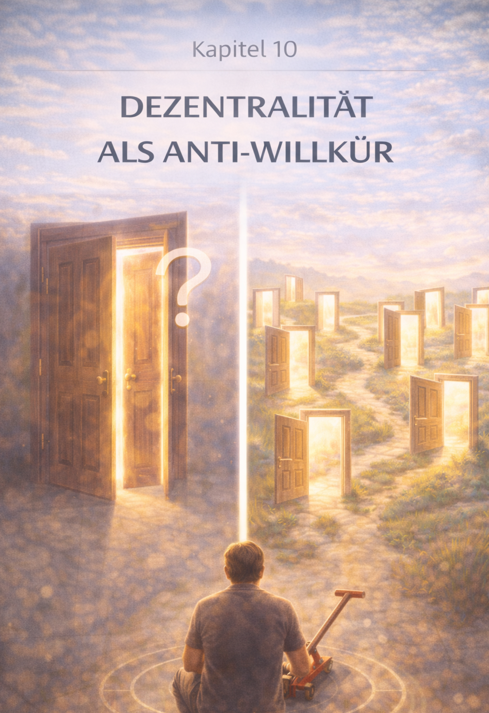

Kapitel 10: Dezentralität als Anti-Willkür
Die Rückeroberung der eigenen Souveränität – Kapitelansicht.
DE
EN
Kapitel 10 – Dezentralität als Anti-Willkür

Kapitelbild – Dezentralität als Anti-Willkür